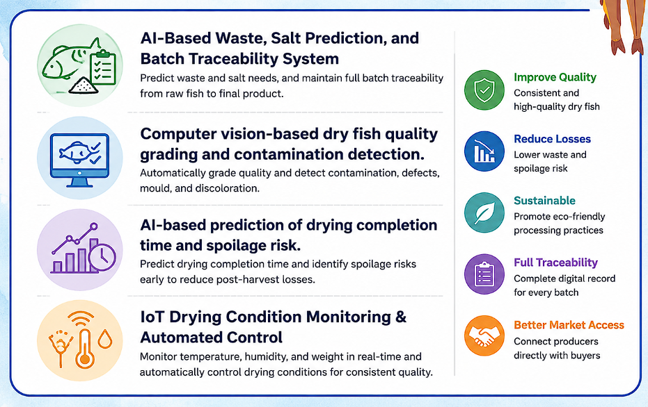
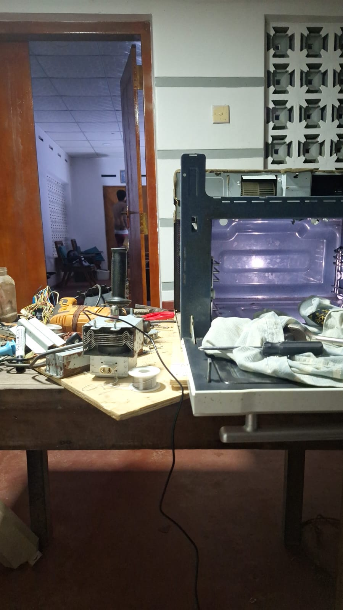
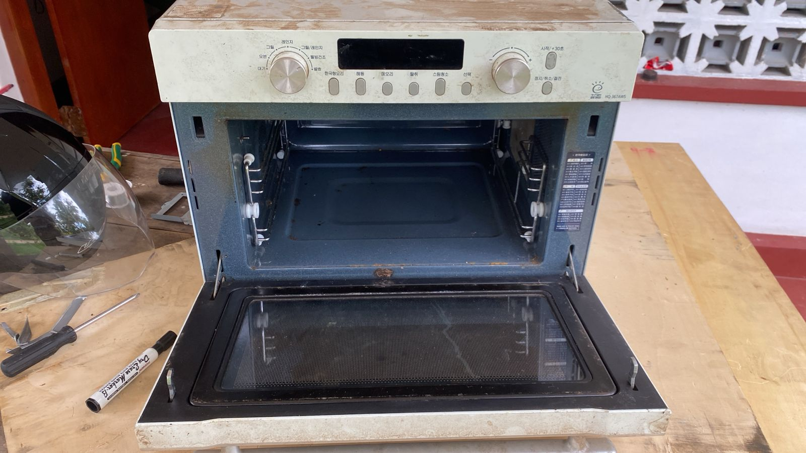
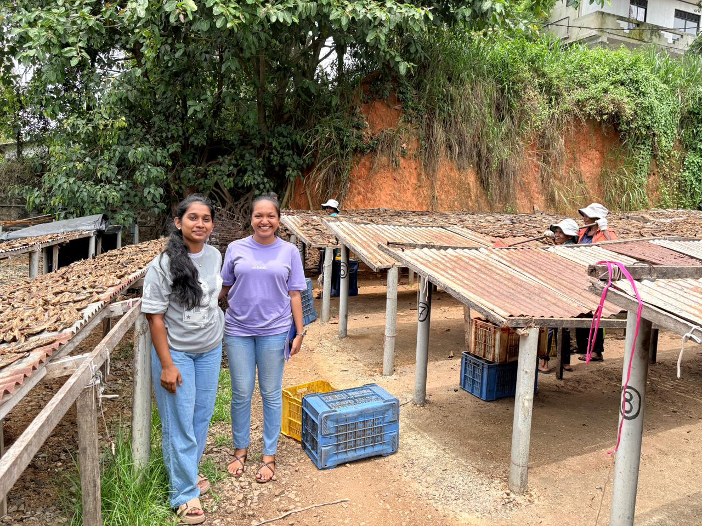
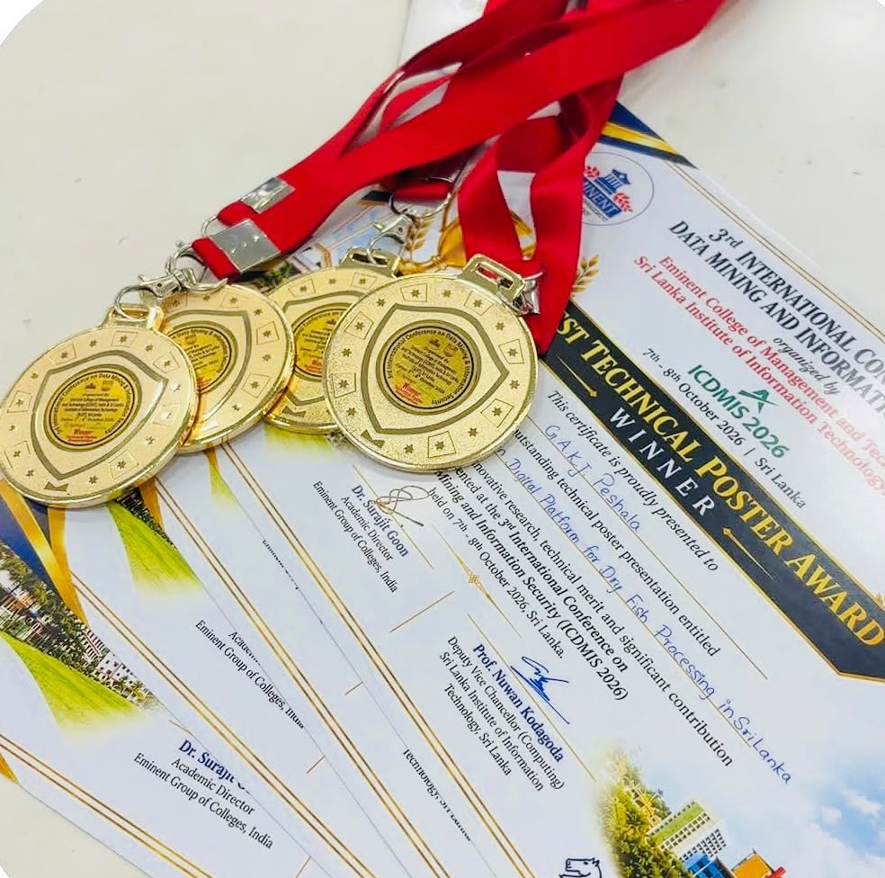

Smart IoT-Driven Digital Platform for Sustainable Dry Fish Processing
An intelligent research platform combining artificial intelligence, IoT monitoring, predictive analytics, computer vision, resource optimization and digital traceability to improve sustainable dry fish processing.
Project Scope
Addressing critical post-harvest vulnerabilities in Sri Lankan dry-fish processing through integrated AI and IoT innovations.
Literature Survey Context
Dry fish (karawala) represents roughly a quarter of Sri Lanka’s marine harvest, serving as a primary protein staple for coastal and rural communities. Academic surveys and baseline studies reveal that traditional processing remains predominantly reliant on artisanal, open-sun drying yards.
Prior published efforts in automated food drying demonstrated isolated microcontroller setups or offline machine-learning estimators. However, existing literature identifies a pervasive gap: environmental sensing, predictive drying algorithms, and supply chain traceability are perpetually treated as disconnected islands, rarely returning live predictions to drying hardware as operating setpoints.
Research Problem Statement
Traditional open-air sun drying produces substantial post-harvest losses (exceeding 20–30% during erratic monsoon periods) through unmonitored microbial spoilage, dust contamination, fly infestation, and inconsistent sodium curing.
Without quantifiable environmental records or automated shut-off mechanisms, processors frequently over-dry or under-dry batches. Furthermore, organic cleaning waste is disposed without recovery, and finished products lack verifiable batch provenance, hindering premium commercial and export viability.
Identified Research Gaps
Contrasting traditional artisanal limitations against our data-driven interventions.
Manual Drying Decisions
Limited Real-Time Monitoring
Inconsistent Quality Assessment
Lack of Predictive Spoilage Monitoring
Limited Digital Traceability
Inefficient Resource Usage
Research Objectives
To develop an intelligent, batch-centric digital platform for sustainable dry fish processing in Sri Lanka that unifies IoT continuous environmental sensing, dynamic predictive analytics, automated chamber control, computer vision quality verification, resource optimization, and end-to-end supply chain traceability.
Predictive Analytics & Automated Chamber Actuation
- Random Forest ensemble achieving R² = 0.956 and MAE = 1.10 min for remaining drying time
- Pre-drying joint prediction of recommended temperature and total process time (R² = 0.745)
- Two-phase chamber start protocol ensuring valid physical sensor state before batch activation
- Independent safety clamp preventing over-drying and commanding heater cut-off on threshold breach
Computer Vision Quality Assessment & Segmentation
- Custom curated and annotated Sri Lankan dry fish dataset covering 12 commercial species
- YOLOv8 instance segmentation model trained for polygon defect identification and grading
- Dry fish verification station with standardized lighting and dual-mode capture camera
- Human-in-the-loop professional review pipeline for edge predictions below confidence threshold
AI-Based Waste, Salt Prediction, and Batch Traceability System for Dry Fish Processing
- Calculated salt dosage prediction models minimizing sodium waste and curing defects
- Machine learning models predicting cleaning waste volume prior to fish processing
- Event-level immutable ledger tracking each batch from raw marine catch to final packaging
- Automated messaging dispatch to recyclers and verifiable QR-code batch passports
IoT Drying Condition Monitoring & Automated Control
- Continuous environmental telemetry (dual thermal probes, humidity, load cell, MQ gas)
- Closed-loop microcontroller state machine executing automated heater and fan actuation
- Two-phase chamber start protocol ensuring physical sensor validity before activation
- Authoritative safety clamping preventing overheating and operator alert triggers
Research Components
Four harmonized technological pillars engineered to deliver intelligent, verifiable, and sustainable dry fish processing.
Predictive Analytics & Automated Drying Control
Dynamic countdown, spoilage scoring, and safety-clamped closed-loop chamber orchestration.
A batch-centric predictive engine that continuously consumes chamber temperature, relative humidity, load-cell mass loss, and metal-oxide gas sensor readings. It recommends initial operating profiles and dynamically updates the remaining drying time while enforcing an independent safety clamping layer.
Key Research Deliverables
Computer Vision Quality Assessment
Polygon defect segmentation, grade verification, and automated dry fish quality classification.
An automated inspection station combining a controlled-lighting imaging booth with a state-of-the-art YOLOv8 segmentation network. The model isolates individual fish instances, identifies surface defects, mold patches, or discoloration, and categorizes products into Grade A, Grade B, and Grade C.
Key Research Deliverables
AI-Based Waste, Salt Prediction, and Batch Traceability System for Dry Fish Processing
Pre-processing fish waste prediction, species-tailored salt optimization, and end-to-end digital batch traceability.
An integrated circular economy and quality assurance module that applies machine learning to forecast cleaning offal and visceral waste from incoming catch metrics, calculates species-tailored salt requirements, and encapsulates all salting, drying, and grading milestones into an immutable batch traceability record with automated recycler notifications.
Key Research Deliverables
IoT Drying Condition Monitoring & Automated Control
Real-time multi-sensor telemetry, closed-loop chamber actuation, and safety threshold clamp enforcement.
An instrumented IoT hot-air drying chamber integrating temperature, relative humidity, load-cell mass loss, and metal-oxide gas sensors. Employs an Arduino Nano microcontroller edge state machine to automate heating elements and ventilation fans while enforcing independent safety threshold overrides.
Key Research Deliverables
Methodology
From empirical field data collection to closed-loop IoT chamber actuation and quality verification.
Requirements Gathering
Coastal field surveys & industry pain points
Conducted field interviews with artisanal dry-fish processors across Negombo, Kalpitiya, and Mirissa. Formulated functional requirements around weather vulnerability, manual quality disputes, and unrecorded waste.
- Stakeholder interviews with 15+ small-scale commercial processors
- Analysis of SLSI (Sri Lanka Standards Institution) dry-fish quality standards
- Mapping traditional process timings for 12 common commercial fish species
Data Collection
Empirical drying profiles & multispectral image capture
Executed experimental drying trials recording ambient and chamber temperatures, relative humidity, mass loss trajectories, and gas sensor volatile signatures across hundreds of operating hours.
- Compiled 3,000 pre-drying records and 2,767 in-process observations across 420 profiles
- Photographed over 1,500 dry fish specimens under controlled lighting
- Recorded species-specific salt ratios and viscera waste weights
Data Pre-processing & Annotation
Signal filtering & polygon instance masking
Applied moving-average noise rejection on load-cell weight signals and metal-oxide gas sensor readings. Hand-annotated polygon segmentation masks for fish instances and surface defects.
- Filtered high-frequency electrical vibration noise in load-cell strain gauges
- Standardized drying curves to dimensionless moisture ratio MR(t)
- Annotated segmentation polygon boundaries using Roboflow toolchains
AI / ML Model Development
Ensemble regression & YOLOv8 instance segmentation
Trained Random Forest and Gradient Boosting regressors for joint pre-drying parameter estimation and dynamic remaining-time prediction. Fine-tuned YOLOv8 for instance segmentation.
- Grouped 5-fold cross-validation by drying profile to prevent temporal data leakage
- Attained R² = 0.956 and MAE = 1.10 min on dynamic remaining drying time
- YOLOv8 defect identification optimized for real-time edge inference
IoT Hardware Integration
Chamber fabrication & embedded microcontrollers
Constructed an instrumented hot-air drying chamber integrating heating elements, exhaust fans, dual thermal probes, DHT22 humidity sensor, MQ gas detector, and cantilever load cells.
- Microcontroller edge state machine executing heater hysteresis switching
- Sensor completeness watchdog triggering immediate fail-safe shutoff
- Serial command bus connecting microcontroller to local computing node
Application & Microservices Integration
Loosely-coupled services & operator interfaces
Architected four decoupled microservices (Auth, Batch/Sustainability, Monitoring, Analytics) communicating over RESTful contracts with an intuitive mobile operator app and web inspection portal.
- Two-phase start handshake ensuring physical sensor validity before recording active state
- Mobile Flutter application for floor operators displaying live countdown telemetry
- Web-based verification station for quality assurance officers
Testing & Validation
Physical reconciliation & safety clamp verification
Conducted unit, integration, and fault-injection tests. Validated safety clamp overrides against malicious temperature commands and resolved logical-to-physical state discrepancies.
- Clamped set-point tests verifying heater cannot exceed configured thermal envelope
- State reconciliation verification: chamber holds sole physical authority over drying state
- Evaluation of drying product moisture content and sensory quality against control batches
Final Deployment & Evaluation
End-to-end trials & research publication
Synthesized experimental outcomes into research publication RP-026-079, defined field trial protocols for full-scale commercialization, and prepared comprehensive academic documentation.
- Published 6-page research manuscript with empirical validation results
- Developed commercialization roadmap for Sri Lankan coastal cooperatives
- Completed public research portfolio portal for academic dissemination
System Architecture & Workflows
Integrated closed-loop architecture orchestrating physical hardware sensing, machine learning pipelines, and operator apps.

Flutter mobile application and web dashboard communicating with REST services, role authentication, notifications, and batch traceability management.
Predictive analytics for waste, salt, drying time, and spoilage risk, alongside YOLOv8 instance segmentation for automated quality grading and defect detection.
Multi-sensor continuous monitoring (temperature, humidity, load cell, gas), automated heater/fan control, and centralized MongoDB storage for batch records.
Sensors & Camera
Dual Temp, Humidity, MQ Gas, Load Cell & High-Res Camera
Edge Controller
Arduino Nano & Controller with Watchdog & Hysteresis
Data Pipeline
Noise filtering, MR(t) Normalization & Feature Vectors
AI / ML Models
Random Forest Regressors & YOLOv8 Segmentation
Control & App
Two-Phase Start, Safety Clamps & Mobile Flutter App
Traceability
Batch Ledgers, Recycler Alerts & Verified QR Passports
Independent Safety Layer & Physical State Reconciliation
The prototype enforces strict separation of ML intelligence and chamber safety: every commanded temperature is clamped to safe envelopes [T_min, T_max] before reaching the heater relays. Furthermore, if the chamber shuts down due to sensor dropout or power faults, the chamber remains authoritative—preventing any false software countdowns.

IoT Drying Chamber Assembly
Insulated drying enclosure equipped with heating elements, air circulation, and load-cell suspension.

Sensor & Actuator Circuitry
Microcontroller breadboard and relay circuitry managing DHT22, load-cell amp, and gas sensors.

Empirical Field Data Collection
Controlled trials on 12 Sri Lankan marine varieties compiling drying curve benchmarks and defect samples.
Technologies & Tooling
Modern engineering tools, machine learning frameworks, and embedded sensing architectures utilized across the research lifecycle.
AI & Machine Learning
Predictive algorithms, computer vision segmentation, and pattern recognition engines powering data-driven processing decisions.
Visual Quality Grading & Defect Detection
Instance segmentation model trained on custom dry fish image datasets for polygon defect identification and Grade A/B/C quality classification.
Dynamic Drying-Time Prediction
Ensemble regressor achieving R² = 0.956 and MAE = 1.10 min for dynamic in-process remaining drying time estimation.
Pre-Drying Setpoint Prediction
Comparative multi-output model predicting initial chamber temperature set-point and estimated total drying duration.
Model Training & Feature Pipelines
Core machine learning toolchain utilized for cross-validation, feature normalization, and pipeline orchestration.
IoT & Hardware Prototyping
Physical sensing instrumentation, chamber actuation, and microcontrollers monitoring environmental and physical states.
Edge Controller & State Machine
Edge controllers running closed-loop state machines, sensor validation routines, and serial command communication.
Continuous Mass & Moisture Loss
Continuous batch weight sensing tracking moisture loss rate, initial weight loss trajectory, and physical drying completion.
Environmental Control
High-precision ambient and probe thermal sensing ensuring closed-loop heater hysteresis and fan humidity exhaustion.
Volatile Odour / Spoilage Proxy
Tracks volatile organic compounds released during fish degradation to feed transparent rule-based spoilage risk scoring.
Application & Interfaces
User interfaces designed for factory floor operators, laboratory verification experts, and supply chain stakeholders.
Operator Floor Application
Cross-platform mobile application giving drying operators real-time chamber telemetry, dynamic countdowns, and safety alerts.
Web & Quality Station
Modern web architecture powering the expert verification station, portfolio showcase, and traceability portal.
Design System
Utility-first design system delivering an elegant, responsive research portfolio and clean UI components.
Fluid UI Animations
Smooth micro-interactions, scroll-driven reveals, and timeline transitions delivering a calm, high-grade aesthetic.
Architecture & Data
Decoupled microservice architecture and structured document stores preserving batch-centric lifecycle traceability.
Analytics Microservice
High-performance asynchronous prediction service hosting ML inference endpoints and safety clamping logic.
Batch & Sustainability Services
Batch management, salt recommendation calculations, and recycler notification notification microservices.
Batch Lifecycle Document Store
Document storage maintaining event-level batch ledgers, preparation logs, sensor time-series, and traceability records.
Version Control
Source code version control, multi-contributor branch workflows, and reproducible research repository management.
Project Milestones
Chronological execution and academic evaluation checkpoints guiding the research from conception to final dissertation.
Topic Assessment & Registration
Initial topic submission, research feasibility analysis, and literature gap identification approved by the SLIIT computing faculty board.
Project Proposal & Defense
Formal presentation and submission of individual proposal reports outlining specific component methodologies, objectives, and work breakdown.
Progress Presentation I
Evaluation of initial prototype development, sensor circuit integration, dry fish image dataset annotation, and preliminary regression models.
Progress Presentation II
Comprehensive progress demonstration covering model cross-validation results, two-phase start chamber protocol, and user verification station.
Research Paper Submission
Completion and submission of the peer-reviewed research manuscript: 'Smart Karawala: A Batch-Centric AI–IoT Framework for Predictive and Automated Dry-Fish Processing'.
Research Portfolio Website
Deployment of the public-facing research portfolio showcase communicating the project vision, empirical results, and downloadable assets.
Logbook & Continuous Assessment
Bi-weekly supervisor consultation meetings, milestone check-ins, sprint tracking, and experimental run documentation.
Final Thesis & Comprehensive Dissertation
Submission of the complete final thesis detailing theoretical foundations, hardware engineering, machine learning pipelines, and field validation.
Final Presentation & Viva Voce
Final project defense in front of the external and internal academic examination panel, including a live interactive system demonstration.
Applications & Platform
Experience the complete Smart Karawala digital ecosystem. Download the production Android mobile app for floor operations or launch the cloud web management portal.
Smart Karawala Mobile App
Built specifically with Flutter for seafood processing floor operators and chamber supervisors. Connects directly to ESP32 IoT microcontrollers to display live chamber telemetry, dynamic drying countdowns, AI-driven salt calculations, and on-device computer vision quality grading.
Smart Karawala Web Portal
Centralized cloud management portal for seafood plant managers, quality assurance auditors, and export controllers. Monitor multi-chamber fleets simultaneously, analyze mathematical moisture decay trends, inspect batch logs, and export digital compliance certificates.
Project Downloads
Access official academic manuscripts, technical proposal specifications, milestone slide decks, and application installers.
Smart Karawala Mobile Operator App
Android APK Package • v1.0.0 Stable
Production Flutter mobile app for drying chamber operators. Real-time telemetry, dynamic countdown, salt ratio predictor, and camera defect scanning.
Smart Karawala Cloud Web Portal
Production Web Platform • app.smartkarawala.me
Cloud web management suite for factory managers and QA inspectors. Multi-chamber oversight, batch traceability passports, AI defect analytics, and reporting.
Research Paper: Smart Karawala (RP-026-079)
Published Submission • 2026
Complete 6-page research manuscript presenting the batch-centric AI-IoT framework, predictive models, and experimental evaluation.
Topic Assessment Form (TAF_R26-IT-079)
Project Approval Form
Official SLIIT Topic Assessment Form detailing research feasibility, problem breakdown, and specialization scope.
Project Proposal Report – Chankama Gunasekara
IT22127396 • March 2026
Proposal report on Computer Vision Quality Grading and YOLOv8 Segmentation (IT22127396).
Project Proposal Report – Ridmi Vivipem
IT22639844 • March 2026
Proposal report on Predictive Analytics, Spoilage Risk Classification, and Closed-loop Drying Control (IT22639844).
Project Proposal Report – Jayani Kalansooriya
IT22554536 • March 2026
Proposal report on AI-Based Waste, Salt Prediction, and Batch Traceability System for Dry Fish Processing (IT22554536).
Project Proposal Report – Milan Sanjaya
IT22189394 • March 2026
Proposal report on IoT Drying Condition Monitoring & Automated Control (IT22189394).
Progress Presentation II (PP2 Slide Deck)
PP2 Presentation Deck
Slide deck covering integration status, evaluation metrics (R² = 0.956, MAE = 1.10 min), commercialization, and live roadmap.
Progress Presentation I (PP1 Slide Deck)
PP1 Presentation Deck
Slide deck presenting individual component architectures, field data collection photos, and hardware installation steps.
Project Proposal Presentation Deck
Proposal Presentation
Initial proposal slide deck establishing the project concept, stakeholder personas, and technical roadmap.
Research Awards & Achievements
Celebrating peer-reviewed excellence and competitive technical accolades earned by the Smart Karawala multidisciplinary research team.

Best Technical Poster Award
3rd International Conference on Data Mining and Information Security
“Digital Platform for Dry Fish Processing in Sri Lanka”
Conferred in recognition of outstanding technical poster presentation, innovative multidisciplinary engineering, rigorous empirical validation, and significant scientific contribution to intelligent coastal food processing.
Supervisors & Research Team
Guiding faculty supervisors and undergraduate student researchers behind the Smart Karawala platform.
Faculty Supervision Panel
Ms. Jenny Krishara
Faculty of Computing, Sri Lanka Institute of Information Technology (SLIIT)
- Academic supervision & research framework alignment
- Guidance on AI/IoT methodology and evaluation metrics
- Continuous progress review and publication direction
Dr. Dinuka Wijendra
Faculty of Computing, Sri Lanka Institute of Information Technology (SLIIT)
- Technical guidance on edge computing & IoT chamber architecture
- Review of predictive modeling and closed-loop process control
- Experimental design and statistical validation
Mr. Dinuth Jayasekara
- Industry domain insights into traditional Sri Lankan dry fish processing
- Commercial viability and coastal stakeholder workflow evaluation
- Practical deployment and sensor durability recommendations
Undergraduate Researchers (SLIIT Faculty of Computing)
Ridmi Vivipem
Team Leader & Researcher
Predictive Analytics & Automated Chamber Control
- Machine learning models for drying-time prediction & spoilage-risk classification
- Integrated environmental parameters (temperature, humidity, weight-loss rate, odour)
- Two-phase chamber start protocol & independent safety clamping layer
Chankama Gunasekara
Researcher
Computer Vision Quality Assessment & Defect Segmentation
- Curated Sri Lankan dry fish image dataset covering Grade A, B, C and defect classes
- YOLOv8 instance segmentation model for precise polygon defect detection
- Dry fish verification station with human-in-the-loop expert review workflow
Jayani Kalansooriya
Researcher
AI-Based Waste, Salt Prediction, and Batch Traceability System for Dry Fish Processing
- Salt quantity recommendation engine based on cleaned fish weight and species
- Machine learning models for fish waste volume prediction and recycler dispatch
- Batch-centric traceability ledger linking catch source to dried package records
Milan Sanjaya
Researcher
IoT Drying Condition Monitoring & Automated Control
- Multi-sensor IoT telemetry integration (temperature, humidity, load cell, MQ gas)
- Automated chamber actuation state machine for heater relays and ventilation fans
- Real-time operator countdown telemetry and threshold safety alert triggers
Contact Us
Have questions about the Smart Karawala digital ecosystem, IoT chamber telemetry, AI predictive models, or research collaborations? Send us a direct inquiry or reach out to our team.
Faculty of Computing, SLIIT Malabe Campus
Send Us a Message
Fill out the form below to deliver a message directly to our research team.